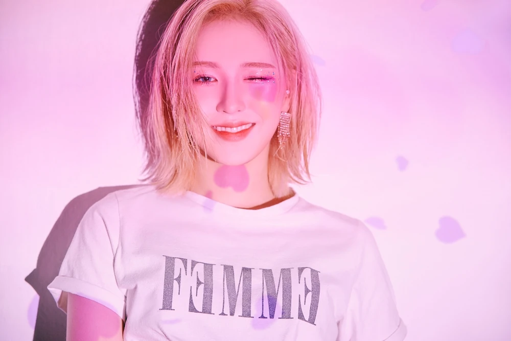

Profile
Learn more about the individual members of the group.
Red Velvet is a South Korean girl group formed by SM Entertainment. The group debuted in 2014 with the single "Happiness"
and has since released several successful albums and singles.Known for their unique concept blending elements of both
"red" and "velvet" in their music and image, Red Velvet has become one of the most popular and successful girl groups in South Korea.
The group currently consists of five members: Irene, Wendy, Seulgi, Joy, and Yeri. Their genres include K-pop, R&B, electropop and dance-pop.
Irene
Bae Ju-Hyun, also better known as Irene, is the leader and the oldest member of the group. She is known for her astounding visuals.
- Birthday: March 29, 1991
- Position: Leader, Main Rapper, Lead Dancer, Sub Vocalist, Visual, Center
- Zodiac Sign: Aries
- Height: 160 cm (5'3")
- Weight: 44 kg (99 lbs)
- MBTI Type: INFJ
- Instagram: @renebaebae
Seulgi
Kang Seul-gi, also better known as Seulgi. She is known for her amazing dancing and vocal skills. Seulgi is the third member to debut as a soloist with her album she recently released named “28 Reasons”.
- Birthday: February 10, 1994
- Position: Center, Main Dancer, Lead Vocalist.
- Zodiac Sign: Aquarius
- Height: 164 cm (5'5")
- Weight: 44 kg (97 lbs)
- MBTI Type: ISFP
- Instagram: @hi_sseulgi
Wendy
Son Seung-wan, also better known as Wendy. She is known for her powerful vocals and versatility as a singer. She is fluent in both English and Korean, which has helped her to connect with fans globally. Wendy is the first member to debut as a soloist with her album “Like Water”.
- Birthday: February 21, 1994
- Position: Main Vocalist
- Zodiac Sign: Pisces
- Height: 160 cm (5'3")
- Weight: 47 kg (104 lbs)
- MBTI Type: ISFP
- Instagram: @todayis_wendy
Joy
Park Soo-young, also better known as Joy. Joy is known for her bright and bubbly personality. Joy is also considered the main vocalist and main dancer of the group thanks to her powerful and emotive vocals. She is the second member to debut as a soloist with the release of her special album “Hello”.
- Birthday: September 3, 1996
- Position: Lead Rapper, Sub Vocalist
- Zodiac Sign: Virgo
- Height: 168 cm (5'6")
- Weight: 49kg (108 lbs)
- MBTI Type: INFP
- Instagram: @_imyour_joy
Yeri
Kim Ye-rim, also better known as Yeri, is the maknae or the youngest member of the group. She wasn’t a part of the original line-up and only joined the group as the fifth member on March 2015. Yeri is known for sweet and versatile vocals and rapping skills accompanied by her cute and and playful stage presence.
- Birthday: March 5, 1999
- Position: Sub Vocalist, Sub Rapper, Maknae
- Zodiac Sign: Pisces
- Height: 160 cm (5'3")
- Weight: 49kg (108lbs)
- MBTI Type: INTP
- Instagram: @yerimiese